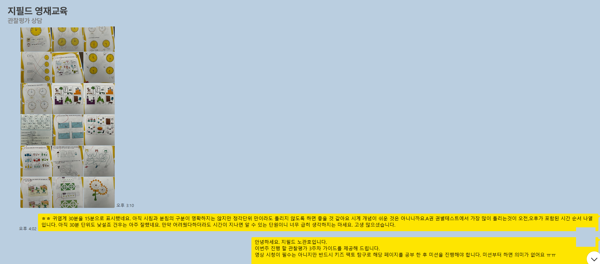
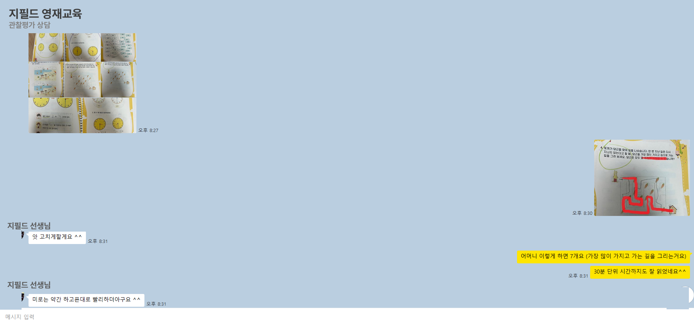

지필드 영재교육
관찰평가
2주차
아이가 어떻게 배우는지, 수업 예시 영상으로 직접 보여드려요.
관찰평가 학습 흐름
영상으로 익히고, 가정에서 복습하고, 과제로 점검합니다.
1
영상으로 학습
핵심 개념을 짧은 영상으로 쉽고 재미있게 배워요.
2
가정에서 복습
배운 내용을 부모님과 한 번 더 짚으며 익숙해져요.
3
과제 제출 · 피드백
완료한 과제를 보내주시면 선생님이 확인해 드려요.
이렇게 피드백해 드려요
과제를 보내주시면 한 문제 한 문제 꼼꼼히 살펴보고, 잘한 점과 보완할 점을 따뜻하게 안내해 드립니다.


예시 영상 보기
실제 수업에서 사용하는 학습 영상이에요.
예시 ① BASIC 시계 읽기

📌 선생님 안내
시계 읽는 법을 아직 모르는 아이들을 위해 만들었습니다. 읽을줄 안다면 영상만 보고 넘어가주시고 연습이 필요하면 따로 보내드리는 교재를 인쇄하여 학습해주세요.
예시 ② 5세 관찰평가 · 키즈팩토 탐구

📌 선생님 안내 · 키즈팩토 탐구 A (P20-42)
(3) 시간 — 오전과 오후의 의미를 알려주었습니다. 잊지 않도록 가정에서 다시 한번 지도 부탁드려요.
(4) 거리와 빠르기 — 어려운 단원은 아니라 수월하게 진행할겁니다. 다만 같은 시간에 가장 긴 길을 간 것이 가장 빠르게 움직인 것 / 같은 길이의 연필이 있을때 가장 긴 연필이 적게 사용한 것이라는 것을 다시 한번 설명 부탁 드립니다.
(5) 미로 → 재미있을 것 같아 추가로 ^^
2주차 학습 내용
🕐시간 개념
오전·오후의 의미를 알고 일상 속 시간을 이해해요.
📏거리와 빠르기
같은 시간에 더 멀리 간 것이 더 빠르다는 원리를 익혀요.
🧩키즈팩토 탐구
미로·패턴 활동으로 사고력을 재미있게 키워요.
🔢규칙·패턴·분류
G-MATH 베이직으로 수학적 사고의 기초를 다져요.